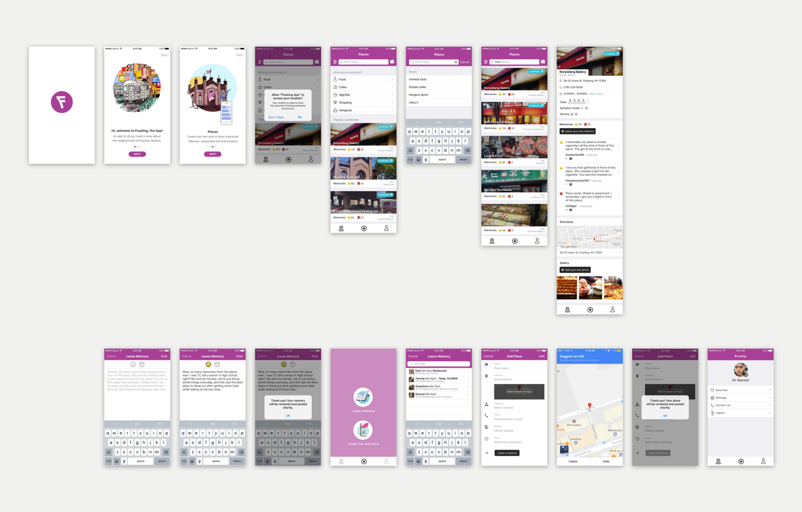

Flushing, Queens: the app
Mobile app concept and design for the
neighborhood
Flushing, Queens is a neighborhood within New York City that distinguishes itself for its diverse mix of asian
ethnicities and culture.
The mobile app concept intends for natives of Flushing to build lasting connections to their home, as well as enabling
new visitors to gain insight into the city’s various nooks and crannies.
The immediate project involved assessing the concept from a previous iteration, researching design necessities
and preparing it for development.
Although Flushing has a rich historical significance, as well as being a famous destination spot for its various Asian cuisines, there is a severe lack of documentation of the neighborhood. Longtime residents also feel they are being slowly swept away by increasing rent and gentrification.
We seek to address these issues by enabling residents to leave some sort of mark on their home in a social way, as well as documenting the numerous food and commercial businesses that attract visitors from the five boroughs and beyond.
Features
Leave a "Memory"
The concept of leaving a “Memory” is a twist on the regular notion of leaving a “review.” Wording it as a memory intends to tap into the user’s sentimental and nostalgic values, allowing a regular review to transform into a more personal and introspective experience. This also gives longtime residents a platform to share stories that only they would know about.
Create your own "Place"
This concept intends to work with Google Map’s API of leaving a pin on any specific location within the map’s coordinates, and creating a public “Place”. For example, a user might designate a neighborhood shortcut that only longtime residents might know about. If the “Place” is approved, regular users of the app could share their “memories” of that shortcut as well and cultivate a dialogue.
Task 1: Look for a place to eat and chill with friends, then leave a memory for the place. Avg. Score (Scale of 1 - 5): 4.5/5
Task 2: Your favorite obscure hangout spot is not located in the list of locations, so you want to be the first to create it. Avg. Score (Scale of 1 - 5): 4/5
One user suggested an expansion of the Memory concept, so that other users from the neighborhood could comment or contribute to the discussion.
In terms of the info for "Venue" page, some users expressed confusion over the "Secrecy" rating, and wanted to know who rates for the "Sanitation Grade".
“Memories seem much more personal, like what I experienced as opposed to just reviewing the place...It's bit of a learning curve but it's definitely cute and fun."
Future steps

Final mockups screens
With the designs ready, the client and I are discussing and searching for the right developer for this project. Throughout the research and designs, I learned to curtail my illustrations for empty and onboarding screens, develop more effective ways to interview users, as well as sharpen my UX process by being detailed about the different flows and screen states that the app could take.
 Freelance
Freelance
 Designer
Designer
 Animator
Animator